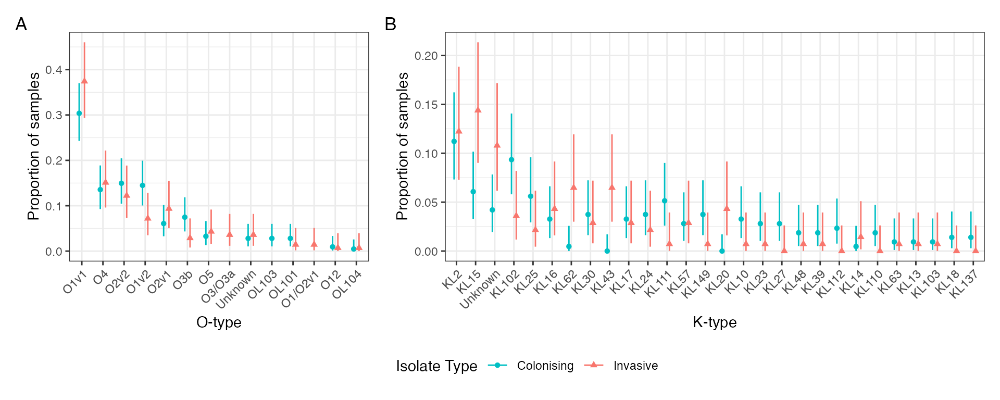

Analysis scripts: K. pneumoniae complex genomics
analysis-kleb.Rmd
# library(dassimKlebs)
library(rstatix)
#>
#> Attaching package: 'rstatix'
#> The following object is masked from 'package:stats':
#>
#> filter
library(phytools)
#> Loading required package: ape
#> Loading required package: maps
library(ggtree)
#> ggtree v3.0.4 For help: https://yulab-smu.top/treedata-book/
#>
#> If you use ggtree in published research, please cite the most appropriate paper(s):
#>
#> 1. Guangchuang Yu. Using ggtree to visualize data on tree-like structures. Current Protocols in Bioinformatics, 2020, 69:e96. doi:10.1002/cpbi.96
#> 2. Guangchuang Yu, Tommy Tsan-Yuk Lam, Huachen Zhu, Yi Guan. Two methods for mapping and visualizing associated data on phylogeny using ggtree. Molecular Biology and Evolution 2018, 35(12):3041-3043. doi:10.1093/molbev/msy194
#> 3. Guangchuang Yu, David Smith, Huachen Zhu, Yi Guan, Tommy Tsan-Yuk Lam. ggtree: an R package for visualization and annotation of phylogenetic trees with their covariates and other associated data. Methods in Ecology and Evolution 2017, 8(1):28-36. doi:10.1111/2041-210X.12628
#>
#> Attaching package: 'ggtree'
#> The following object is masked from 'package:ape':
#>
#> rotate
library(ape)
library(cowplot)
library(ggpubr)
#> Loading required package: ggplot2
#>
#> Attaching package: 'ggpubr'
#> The following object is masked from 'package:cowplot':
#>
#> get_legend
#> The following object is masked from 'package:ggtree':
#>
#> rotate
#> The following object is masked from 'package:ape':
#>
#> rotate
library(dplyr)
#>
#> Attaching package: 'dplyr'
#> The following objects are masked from 'package:stats':
#>
#> filter, lag
#> The following objects are masked from 'package:base':
#>
#> intersect, setdiff, setequal, union
library(forcats)
library(tidyr)
#>
#> Attaching package: 'tidyr'
#> The following object is masked from 'package:ggtree':
#>
#> expand
library(here)
#> here() starts at /Users/joelewis/R/packages/blantyreESBL
library(kableExtra)
#>
#> Attaching package: 'kableExtra'
#> The following object is masked from 'package:dplyr':
#>
#> group_rows
library(patchwork)
#>
#> Attaching package: 'patchwork'
#> The following object is masked from 'package:cowplot':
#>
#> align_plots
library(scales)
library(viridis)
#> Loading required package: viridisLite
#>
#> Attaching package: 'viridis'
#> The following object is masked from 'package:scales':
#>
#> viridis_pal
#> The following object is masked from 'package:maps':
#>
#> unemp
library(pheatmap)
library(ggplotify)
library(blantyreESBL)
library(stringr)
sp_dc <- function(x, k) {
trimws(format(round(x, k), nsmall = k))
}
write_figs <- TRUE
if (write_figs) {
if (!dir.exists(here("figures"))) {dir.create(here("figures"))}
if (!dir.exists(here("tables"))) {dir.create(here("tables"))}
if (!dir.exists(here("figures/kleb-genomics"))) {
dir.create(here("figures/kleb-genomics"))
}
if (!dir.exists(here("tables/kleb-genomics"))) {
dir.create(here("tables/kleb-genomics"))
}
}Introduction
This document generates the tables and figures for the manuscript:
Genomic and antigenic diversity of carried Klebsiella pneumoniae isolates mirrors that of invasive isolates in Blantyre, Malawi
Joseph M Lewis1,2,3,4, , Madalitso Mphasa1, Rachel Banda1, Matthew Beale4, Jane Mallewa5, Eva Heinz2, Nicholas Thomson4, Nicholas A Feasey1,2
- Malawi Liverpool Wellcome Clinical Research Programme, Blantyre, Malawi
- Department of Clinical Sciences, Liverpool School of Tropical Medicine, Liverpool, UK
- Department of Clinical Infection, Microbiology and Immunology, University of Liverpool, Liverpool, UK
- Wellcome Sanger Institute, Hinxton, UK
- College of Medicine, University of Malawi, Malawi
Assembly stats and accession numbers
# load accessions and assembly stats
btESBL_sequence_sample_metadata %>%
filter(grepl("Klebsiella", species)) %>%
transmute("Sample accession" = accession,
"Lane name" = lane,
"No. contigs" = number_of_contigs,
"N50" = N50) %>%
kbl(caption = "Accession numbers and assembly statistics for included samples") %>%
kable_classic(full_width = FALSE)| Sample accession | Lane name | No. contigs | N50 |
|---|---|---|---|
| ERR6057876 | 34154_7_3 | 42 | 398104 |
| ERR6057877 | 34154_7_4 | 22 | 815040 |
| ERR6057878 | 34154_7_5 | 30 | 416814 |
| ERR6057879 | 34154_7_6 | 32 | 578196 |
| ERR6057880 | 34154_7_8 | 83 | 241627 |
| ERR6057881 | 34154_7_10 | 67 | 190680 |
| ERR6057882 | 34154_7_11 | 28 | 374232 |
| ERR6057883 | 34154_7_12 | 61 | 219836 |
| ERR6057884 | 34154_7_13 | 39 | 508183 |
| ERR6057885 | 34154_7_14 | 37 | 482415 |
| ERR6057886 | 34154_7_16 | 22 | 661690 |
| ERR6057887 | 34154_7_18 | 35 | 326635 |
| ERR6057888 | 34154_7_19 | 45 | 532297 |
| ERR6057889 | 34154_7_20 | 56 | 203429 |
| ERR6057890 | 34154_7_22 | 53 | 280122 |
| ERR6057891 | 34154_7_23 | 40 | 361647 |
| ERR6057892 | 34154_7_24 | 24 | 811788 |
| ERR6057893 | 34154_7_25 | 43 | 441618 |
| ERR6057894 | 34154_7_26 | 48 | 292152 |
| ERR6057895 | 34154_7_27 | 121 | 372362 |
| ERR6057896 | 34154_7_30 | 29 | 377741 |
| ERR6057897 | 34154_7_31 | 23 | 1042763 |
| ERR6057898 | 34154_7_32 | 32 | 453707 |
| ERR6057899 | 34154_7_33 | 158 | 579186 |
| ERR6057901 | 34154_7_36 | 37 | 454335 |
| ERR6057902 | 34154_7_38 | 36 | 410104 |
| ERR6057903 | 34154_7_39 | 31 | 758176 |
| ERR6057904 | 34154_7_40 | 67 | 320677 |
| ERR6057905 | 34154_7_41 | 41 | 639936 |
| ERR6057906 | 34154_7_42 | 45 | 424465 |
| ERR6057907 | 34154_7_44 | 81 | 169754 |
| ERR6057908 | 34154_7_46 | 29 | 1464071 |
| ERR6057909 | 34154_7_47 | 39 | 472256 |
| ERR6057910 | 34154_7_48 | 77 | 203827 |
| ERR6057911 | 34154_7_49 | 32 | 1042515 |
| ERR6057912 | 34154_7_50 | 31 | 471152 |
| ERR6057913 | 34154_7_52 | 45 | 407840 |
| ERR6057914 | 34154_7_54 | 33 | 358180 |
| ERR6057915 | 34154_7_55 | 46 | 317618 |
| ERR6057916 | 34154_7_56 | 103 | 193216 |
| ERR6057917 | 34154_7_58 | 38 | 373601 |
| ERR6057918 | 34154_7_59 | 34 | 431290 |
| ERR6057919 | 34154_7_60 | 48 | 324706 |
| ERR6057921 | 34154_7_62 | 51 | 408198 |
| ERR6057922 | 34154_7_63 | 46 | 344926 |
| ERR6057925 | 34154_7_68 | 58 | 204836 |
| ERR6057926 | 34154_7_69 | 32 | 377614 |
| ERR6057927 | 34154_7_70 | 104 | 154943 |
| ERR6057929 | 34154_7_74 | 63 | 209640 |
| ERR6057930 | 34154_7_75 | 37 | 358303 |
| ERR6057931 | 34154_7_76 | 35 | 602453 |
| ERR6057932 | 34154_7_77 | 55 | 272185 |
| ERR6057933 | 34154_7_78 | 61 | 188445 |
| ERR6057934 | 34154_7_80 | 42 | 472259 |
| ERR6057936 | 34154_7_83 | 30 | 718728 |
| ERR6057937 | 34154_7_84 | 56 | 169243 |
| ERR6057938 | 34154_7_86 | 45 | 381605 |
| ERR6057939 | 34154_7_87 | 36 | 403059 |
| ERR6057940 | 34154_7_88 | 51 | 239958 |
| ERR6057941 | 34154_7_89 | 26 | 406592 |
| ERR6057942 | 34154_7_90 | 31 | 427666 |
| ERR6057943 | 34154_7_91 | 34 | 474397 |
| ERR6057944 | 34154_7_94 | 48 | 362711 |
| ERR6057945 | 34154_7_95 | 40 | 501204 |
| ERR6057946 | 34154_7_96 | 34 | 410121 |
| ERR6057947 | 34154_7_97 | 25 | 577547 |
| ERR6057948 | 34154_7_98 | 34 | 483580 |
| ERR6057949 | 34154_7_100 | 42 | 668442 |
| ERR6057950 | 34154_7_102 | 67 | 190918 |
| ERR6057951 | 34154_7_103 | 37 | 579329 |
| ERR6057952 | 34154_7_104 | 51 | 331270 |
| ERR6057953 | 34154_7_105 | 76 | 182873 |
| ERR6057954 | 34154_7_106 | 54 | 442852 |
| ERR6057955 | 34154_7_108 | 41 | 622199 |
| ERR6057956 | 34154_7_110 | 43 | 855851 |
| ERR6057958 | 34154_7_112 | 44 | 702061 |
| ERR6057961 | 34154_7_116 | 48 | 298228 |
| ERR6057962 | 34154_7_118 | 30 | 367382 |
| ERR6057963 | 34154_7_119 | 63 | 294596 |
| ERR6057965 | 34154_7_122 | 40 | 326754 |
| ERR6057966 | 34154_7_123 | 72 | 208170 |
| ERR6057968 | 34154_7_125 | 27 | 630789 |
| ERR6057971 | 34154_7_130 | 57 | 262748 |
| ERR6057972 | 34154_7_131 | 34 | 602457 |
| ERR6057975 | 34154_7_134 | 66 | 363110 |
| ERR6057976 | 34154_7_136 | 58 | 280266 |
| ERR6057977 | 34154_7_138 | 58 | 222947 |
| ERR6057979 | 34154_7_140 | 34 | 794807 |
| ERR6057981 | 34154_7_142 | 29 | 424807 |
| ERR6057982 | 34154_7_144 | 67 | 209137 |
| ERR6057983 | 34154_7_146 | 26 | 630958 |
| ERR6057985 | 34154_7_148 | 32 | 397227 |
| ERR6057986 | 34154_7_150 | 218 | 185957 |
| ERR6057988 | 34154_7_152 | 39 | 424465 |
| ERR6057989 | 34154_7_153 | 126 | 103010 |
| ERR6057991 | 34154_7_155 | 36 | 720261 |
| ERR6057992 | 34154_7_158 | 63 | 266644 |
| ERR6057994 | 34154_7_160 | 45 | 358687 |
| ERR6057996 | 34154_7_162 | 40 | 584309 |
| ERR6057997 | 34154_7_164 | 58 | 326092 |
| ERR6057998 | 34154_7_166 | 57 | 197588 |
| ERR6058000 | 34154_7_168 | 25 | 713824 |
| ERR6058003 | 34154_7_172 | 35 | 380055 |
| ERR6058004 | 34154_7_174 | 71 | 185030 |
| ERR6058006 | 34154_7_176 | 183 | 363131 |
| ERR6058008 | 34154_7_178 | 38 | 396979 |
| ERR6058009 | 34154_7_179 | 78 | 274664 |
| ERR6058011 | 34154_7_183 | 66 | 159382 |
| ERR6058012 | 34154_7_184 | 22 | 1457444 |
| ERR6058013 | 34154_7_185 | 57 | 333184 |
| ERR6058016 | 34154_7_189 | 47 | 715588 |
| ERR6058018 | 34154_7_191 | 81 | 188298 |
| ERR6058019 | 34154_7_194 | 78 | 204640 |
| ERR6058022 | 34154_7_197 | 31 | 428941 |
| ERR6058024 | 34154_7_199 | 102 | 170378 |
| ERR6058025 | 34154_7_202 | 82 | 158603 |
| ERR6058027 | 34154_7_204 | 33 | 713297 |
| ERR6058028 | 34154_7_205 | 128 | 94969 |
| ERR6058030 | 34154_7_207 | 50 | 268948 |
| ERR6058031 | 34154_7_210 | 46 | 383706 |
| ERR6058033 | 34154_7_212 | 68 | 238327 |
| ERR6058034 | 34154_7_213 | 34 | 367714 |
| ERR6058036 | 34154_7_216 | 34 | 817205 |
| ERR6058038 | 34154_7_218 | 202 | 580601 |
| ERR6058039 | 34154_7_219 | 50 | 463964 |
| ERR6058040 | 34154_7_221 | 83 | 194692 |
| ERR6058042 | 34154_7_224 | 41 | 380637 |
| ERR6058044 | 34154_7_226 | 36 | 579329 |
| ERR6058045 | 34154_7_227 | 43 | 405607 |
| ERR6058047 | 34154_7_231 | 97 | 185528 |
| ERR6058048 | 34154_7_232 | 41 | 433954 |
| ERR6058050 | 34154_7_234 | 37 | 512304 |
| ERR6058051 | 34154_7_235 | 77 | 270793 |
| ERR6058053 | 34154_7_239 | 55 | 222947 |
| ERR6058054 | 34154_7_240 | 65 | 209516 |
| ERR6058056 | 34154_7_242 | 68 | 362712 |
| ERR6058059 | 34154_7_247 | 99 | 171469 |
| ERR6058060 | 34154_7_248 | 44 | 431267 |
| ERR6058061 | 34154_7_249 | 34 | 698084 |
| ERR6058063 | 34154_7_252 | 46 | 715600 |
| ERR6058065 | 34154_7_254 | 36 | 529663 |
| ERR6058066 | 34154_7_255 | 41 | 405560 |
| ERR6058068 | 34154_7_259 | 72 | 333667 |
| ERR6058069 | 34154_7_260 | 23 | 630957 |
| ERR6058071 | 34154_7_262 | 53 | 326092 |
| ERR6058072 | 34154_7_263 | 37 | 437143 |
| ERR6058074 | 34154_7_267 | 34 | 643697 |
| ERR6058075 | 34154_7_268 | 45 | 292764 |
| ERR6058076 | 34154_7_269 | 46 | 371971 |
| ERR6058078 | 34154_7_271 | 48 | 448219 |
| ERR6058079 | 34154_7_274 | 45 | 356539 |
| ERR6058081 | 34154_7_276 | 25 | 609308 |
| ERR6058082 | 34154_7_277 | 44 | 351289 |
| ERR6058083 | 34154_7_279 | 36 | 510163 |
| ERR6058085 | 34154_7_281 | 48 | 393764 |
| ERR6058087 | 34154_7_283 | 41 | 362707 |
| ERR6058089 | 34154_7_287 | 108 | 164351 |
| ERR6058091 | 34154_7_289 | 34 | 510807 |
| ERR6058093 | 34154_7_291 | 31 | 365644 |
| ERR6058094 | 34154_7_294 | 29 | 915814 |
| ERR6058096 | 34154_7_296 | 42 | 280593 |
| ERR6058098 | 34154_7_298 | 79 | 189067 |
| ERR6058099 | 34154_7_299 | 73 | 184552 |
| ERR6058101 | 34154_7_303 | 36 | 969325 |
| ERR6058102 | 34154_7_304 | 22 | 1004795 |
| ERR6058103 | 34154_7_306 | 43 | 358237 |
| ERR6058104 | 34154_7_307 | 82 | 186567 |
| ERR6058106 | 34154_7_312 | 25 | 632067 |
| ERR6058107 | 34154_7_313 | 72 | 180607 |
| ERR6058108 | 34154_7_316 | 42 | 497931 |
| ERR6058109 | 34154_7_317 | 33 | 375860 |
| ERR6058110 | 34154_7_318 | 54 | 280266 |
| ERR6058111 | 34154_7_322 | 288 | 532790 |
| ERR6058112 | 34154_7_323 | 33 | 467932 |
| ERR6058113 | 34154_7_324 | 46 | 388030 |
| ERR6058114 | 34154_7_325 | 55 | 378141 |
| ERR6058115 | 34154_7_330 | 85 | 184786 |
| ERR6058116 | 34154_7_331 | 38 | 549144 |
| ERR6058117 | 34154_7_332 | 27 | 1346685 |
| ERR6058118 | 34154_7_333 | 53 | 326092 |
| ERR6058119 | 34154_7_338 | 62 | 276747 |
| ERR6058120 | 34154_7_339 | 54 | 325458 |
| ERR6058121 | 34154_7_340 | 57 | 472254 |
| ERR6058122 | 34154_7_343 | 44 | 339454 |
| ERR6058123 | 34154_7_344 | 45 | 357212 |
| ERR6058124 | 34154_7_345 | 219 | 170780 |
| ERR6058125 | 34154_7_348 | 23 | 407535 |
| ERR6058126 | 34154_7_351 | 53 | 1106021 |
| ERR6058127 | 34154_7_352 | 37 | 576128 |
| ERR6058128 | 34154_7_353 | 41 | 355308 |
| ERR6058130 | 34154_7_359 | 38 | 1063606 |
| ERR6058131 | 34154_7_360 | 29 | 630096 |
| ERR6058132 | 34154_7_361 | 47 | 361623 |
| ERR6058133 | 34154_7_366 | 46 | 512621 |
| ERR6058134 | 34154_7_367 | 43 | 289129 |
| ERR6058135 | 34154_7_368 | 59 | 290816 |
| ERR6058136 | 34154_7_369 | 43 | 328154 |
| ERR6058137 | 34154_7_374 | 34 | 465751 |
| ERR6058138 | 34154_7_375 | 48 | 280704 |
| ERR6058139 | 34154_7_376 | 28 | 377740 |
| ERR6058140 | 34154_7_378 | 30 | 668781 |
| ERR6058141 | 34154_7_379 | 27 | 371955 |
| ERR6058142 | 34154_7_380 | 58 | 312639 |
MLST, K and O loci
btESBL_sequence_sample_metadata %>%
filter(grepl("Klebsiella", species)) %>%
rename_with(~ gsub("kleb_", "", .x)) %>%
rename_with(~ gsub("k_locus", "K_locus", .x)) %>%
rename_with(~ gsub("o_locus", "O_locus", .x)) ->
dassimKleb_BTKleb.diversity
dassimKleb_BTKleb.diversity %>%
group_by(ST) %>%
mutate(n = n(),
ST = paste0("ST",ST)) %>%
filter(n > 1, ST != "STNovel") %>%
ggplot(aes(fct_infreq(ST))) +
geom_bar(fill = viridis_pal()(4)[3]) +
coord_flip() +
labs(y = "Number", x = element_blank()) +
theme_bw() -> a
dassimKleb_BTKleb.diversity %>%
mutate(K_locus = case_when(
K_locus_confidence %in%
c("Good",
"High",
"Very high") ~ K_locus,
TRUE ~ "Unknown")) %>%
group_by(K_locus) %>%
mutate(n = n()) %>%
filter(n > 1) %>%
ggplot(aes(fct_infreq(K_locus))) +
geom_bar(fill = viridis_pal()(4)[2]) +
coord_flip() +
labs(y = "Number", x = element_blank()) +
theme_bw() -> b
dassimKleb_BTKleb.diversity%>%
mutate(O_locus = case_when(
O_locus_confidence %in%
c("Good",
"High",
"Very high") ~ O_locus,
TRUE ~ "Unknown")) %>%
group_by(O_locus) %>%
mutate(n = n()) %>%
# filter(n > 1) %>%
ggplot(aes(fct_infreq(O_locus))) +
geom_bar(fill = viridis_pal()(4)[1]) +
coord_flip() +
labs(y = "Number", x = element_blank()) +
theme_bw() -> c
# cum K and O serotypes
bind_rows(
dassimKleb_BTKleb.diversity %>%
group_by(K_locus) %>%
summarise(n = n()) %>%
ungroup() %>%
arrange(desc(n)) %>%
mutate(
n_loci = 1:n(),
cum_n = cumsum(n),
cum_prop = cum_n / (max(cum_n)+9),
type = "K-type"
) %>%
rename(Locus = K_locus),
dassimKleb_BTKleb.diversity %>%
group_by(O_locus) %>%
mutate(O_locus = case_when(
O_locus_confidence %in%
c("Good",
"High",
"Very high") ~ O_locus,
TRUE ~ "Unknown")) %>%
filter(O_locus != "Unknown") %>%
summarise(n = n()) %>%
ungroup() %>%
arrange(desc(n)) %>%
mutate(
n_loci = 1:n(),
cum_n = cumsum(n),
cum_prop = cum_n / (max(cum_n)+6), # fudge for unknown O tyoe
type = "O-type"
) %>%
rename(Locus = O_locus),
dassimKleb_BTKleb.diversity %>%
filter(ST != "Novel") %>%
group_by(ST) %>%
summarise(n = n()) %>%
ungroup() %>%
arrange(desc(n)) %>%
mutate(
n_loci = 1:n(),
cum_n = cumsum(n),
cum_prop = cum_n / max(cum_n),
type = "ST"
) %>%
rename(Locus = ST)
) %>%
mutate(type = factor(type, levels =
c("O-type",
"K-type",
"ST"))) %>%
ggplot(aes(n_loci, cum_prop, color = type)) +
geom_line() +
theme_bw() +
scale_color_manual(values = viridis_pal()(4)[1:3]) +
labs(x= "Number of K/O-type/ST", y = "Cum. prevalence") +
theme(legend.title = element_blank()) -> d
dassimKleb_BTKleb.diversity %>%
mutate(O_locus = case_when(
O_locus_confidence %in%
c("Good",
"High",
"Very high") ~ O_locus,
TRUE ~ "Unknown"),
ST = paste0("ST", ST)) %>%
filter(ST != "STNovel") %>%
group_by(ST) %>%
mutate(n = n()) %>%
filter(n > 1) %>%
ungroup() %>%
mutate(O_locus = fct_infreq(O_locus),
ST = fct_infreq(ST)) %>%
group_by(O_locus, ST) %>%
summarise(n = n()) %>%
ggplot(aes(ST,O_locus, size = n)) +
geom_point(color = viridis_pal()(4)[1]) +
theme_bw() +
labs(y = "O-type") +
theme(axis.text.x = element_text(angle = 45, hjust = 1),
legend.title = element_blank()) -> e
#> `summarise()` has grouped output by 'O_locus'. You can override using the `.groups` argument.
dassimKleb_BTKleb.diversity %>%
mutate(K_locus = case_when(
K_locus_confidence %in%
c("Good",
"High",
"Very high") ~ K_locus,
TRUE ~ "Unknown"),
ST = paste0("ST", ST)) %>%
filter(ST != "STNovel") %>%
group_by(ST) %>%
mutate(n = n()) %>%
filter(n > 1) %>%
ungroup() %>%
mutate(K_locus = fct_infreq(K_locus),
ST = fct_infreq(ST)) %>%
group_by(K_locus, ST) %>%
summarise(n = n()) %>%
ggplot(aes(ST,K_locus, size = n)) +
geom_point(color = viridis_pal()(4)[2]) +
theme_bw() +
labs(y = "K-type") +
theme(axis.text.x = element_text(angle = 45, hjust = 1),
legend.title = element_blank()) +
scale_size(breaks = c(5,10,15))-> f
#> `summarise()` has grouped output by 'K_locus'. You can override using the `.groups` argument.
((a + b + (c / d)) / e / f) +
plot_layout(heights = c(2,1,2)) +
plot_annotation(tag_levels = "A") -> stplot
stplot![FIGURE X: Diversity of Klebsiella chromasomal sequence type (ST, A), K-type (B) and O-type (C). (D) shows cumulative prevalence for ST, K-type and O-types for all isolates in the collection as a function of the number of K-types, O-types, or STs, with each category ordered in size from largest to smallest. (E) and (F) show ST association of O-type and K-type respectively, where area of point is proportional to number of samples in the study. STs with only a single representative in the collection are excluded from plots A, B, C,E, F.](analysis-kleb_files/figure-html/mlst-1.png)
FIGURE X: Diversity of Klebsiella chromasomal sequence type (ST, A), K-type (B) and O-type (C). (D) shows cumulative prevalence for ST, K-type and O-types for all isolates in the collection as a function of the number of K-types, O-types, or STs, with each category ordered in size from largest to smallest. (E) and (F) show ST association of O-type and K-type respectively, where area of point is proportional to number of samples in the study. STs with only a single representative in the collection are excluded from plots A, B, C,E, F.
if (write_figs) {
ggsave(
filename = here("figures/kleb-genomics/F1_stplot.svg"),
plot = stplot,
width = 8,
height = 11
)
ggsave(
filename = here("figures/kleb-genomics/F1_stplot.pdf"),
plot = stplot,
width = 8,
height = 11
)
}
dassimKleb_BTKleb.diversity %>%
mutate(O_locus = case_when(
O_locus_confidence %in%
c("Good",
"High",
"Very high") ~ O_locus,
TRUE ~ "Unknown")) %>%
group_by(O_locus) %>%
summarise(n = n()) %>%
arrange(desc(n)) %>%
mutate(csum = cumsum(n)) %>%
mutate(n = paste0(n, " (", sp_dc(100*n/max(csum),1),"%)")) %>%
mutate(prop = paste0(csum, " (", sp_dc(100*csum /max(csum),1), "%)")) %>%
select(O_locus, n, prop) %>%
kbl(caption = "O-types of carriage isolates",
col.names = c("O-type",
"n (%)",
"Cumulative n (%)")) %>%
kable_classic(full_width = FALSE)| O-type | n (%) | Cumulative n (%) |
|---|---|---|
| O1v1 | 60 (29.6%) | 60 (29.6%) |
| O2v2 | 30 (14.8%) | 90 (44.3%) |
| O1v2 | 29 (14.3%) | 119 (58.6%) |
| O4 | 29 (14.3%) | 148 (72.9%) |
| O3b | 16 (7.9%) | 164 (80.8%) |
| O2v1 | 13 (6.4%) | 177 (87.2%) |
| O5 | 6 (3.0%) | 183 (90.1%) |
| OL101 | 6 (3.0%) | 189 (93.1%) |
| OL103 | 6 (3.0%) | 195 (96.1%) |
| Unknown | 6 (3.0%) | 201 (99.0%) |
| O12 | 1 (0.5%) | 202 (99.5%) |
| OL104 | 1 (0.5%) | 203 (100.0%) |
dassimKleb_BTKleb.diversity %>%
mutate(K_locus = case_when(
K_locus_confidence %in%
c("Good",
"High",
"Very high") ~ K_locus,
TRUE ~ "Unknown"
)) %>%
group_by(K_locus) %>%
summarise(n = n()) %>%
arrange(desc(n)) %>%
mutate(csum = cumsum(n)) %>%
mutate(n = paste0(n, " (", sp_dc(100 * n / max(csum), 1), "%)")) %>%
mutate(prop = paste0(csum, " (", sp_dc(100 * csum / max(csum), 1), "%)")) %>%
select(K_locus, n, prop) %>%
kbl(caption = "K-types of carriage isolates",
col.names = c("K-type",
"n (%)",
"Cumulative n (%)")) %>%
kable_classic(full_width = FALSE)| K-type | n (%) | Cumulative n (%) |
|---|---|---|
| KL2 | 23 (11.3%) | 23 (11.3%) |
| KL102 | 19 (9.4%) | 42 (20.7%) |
| KL15 | 13 (6.4%) | 55 (27.1%) |
| KL25 | 12 (5.9%) | 67 (33.0%) |
| KL111 | 11 (5.4%) | 78 (38.4%) |
| Unknown | 9 (4.4%) | 87 (42.9%) |
| KL149 | 8 (3.9%) | 95 (46.8%) |
| KL30 | 8 (3.9%) | 103 (50.7%) |
| KL16 | 7 (3.4%) | 110 (54.2%) |
| KL24 | 7 (3.4%) | 117 (57.6%) |
| KL10 | 6 (3.0%) | 123 (60.6%) |
| KL17 | 6 (3.0%) | 129 (63.5%) |
| KL57 | 6 (3.0%) | 135 (66.5%) |
| KL112 | 5 (2.5%) | 140 (69.0%) |
| KL23 | 5 (2.5%) | 145 (71.4%) |
| KL27 | 5 (2.5%) | 150 (73.9%) |
| KL110 | 4 (2.0%) | 154 (75.9%) |
| KL48 | 4 (2.0%) | 158 (77.8%) |
| KL137 | 3 (1.5%) | 161 (79.3%) |
| KL18 | 3 (1.5%) | 164 (80.8%) |
| KL39 | 3 (1.5%) | 167 (82.3%) |
| KL108 | 2 (1.0%) | 169 (83.3%) |
| KL13 | 2 (1.0%) | 171 (84.2%) |
| KL136 | 2 (1.0%) | 173 (85.2%) |
| KL151 | 2 (1.0%) | 175 (86.2%) |
| KL155 | 2 (1.0%) | 177 (87.2%) |
| KL21 | 2 (1.0%) | 179 (88.2%) |
| KL54 | 2 (1.0%) | 181 (89.2%) |
| KL63 | 2 (1.0%) | 183 (90.1%) |
| KL67 | 2 (1.0%) | 185 (91.1%) |
| KL8 | 2 (1.0%) | 187 (92.1%) |
| KL103 | 1 (0.5%) | 188 (92.6%) |
| KL105 | 1 (0.5%) | 189 (93.1%) |
| KL114 | 1 (0.5%) | 190 (93.6%) |
| KL115 | 1 (0.5%) | 191 (94.1%) |
| KL12 | 1 (0.5%) | 192 (94.6%) |
| KL123 | 1 (0.5%) | 193 (95.1%) |
| KL14 | 1 (0.5%) | 194 (95.6%) |
| KL145 | 1 (0.5%) | 195 (96.1%) |
| KL157 | 1 (0.5%) | 196 (96.6%) |
| KL19 | 1 (0.5%) | 197 (97.0%) |
| KL52 | 1 (0.5%) | 198 (97.5%) |
| KL59 | 1 (0.5%) | 199 (98.0%) |
| KL62 | 1 (0.5%) | 200 (98.5%) |
| KL64 | 1 (0.5%) | 201 (99.0%) |
| KL74 | 1 (0.5%) | 202 (99.5%) |
| KL9 | 1 (0.5%) | 203 (100.0%) |
Species and population structure
# what species from kleborate
table(dassimKleb_BTKleb.diversity$species)
#>
#> Klebsiella pneumoniae
#> 190
#> Klebsiella quasipneumoniae subsp. quasipneumoniae
#> 2
#> Klebsiella quasipneumoniae subsp. similipneumoniae
#> 7
#> Klebsiella quasivariicola
#> 1
#> Klebsiella variicola subsp. variicola
#> 3
dassimKleb_trees.BTcarriage <- btESBL_coregene_tree_kleb
dassimKleb_BTKleb.diversity %>%
select(ST, lane) %>%
mutate(ST = paste0("ST", ST)) %>%
pivot_wider(id_cols = lane ,
names_from = ST,
values_from = ST,
values_fn = length,
values_fill = 0) %>%
mutate(lane = gsub("#","_", lane)) %>%
as.data.frame() ->
mlst.onehot
mlst.onehot[, c("lane",
names(sort(apply(mlst.onehot[-1], 2, sum),
decreasing = TRUE)))] -> mlst.onehot
mlst.onehot[-1] <- lapply(mlst.onehot[-1], as.factor)
rownames(mlst.onehot) <- mlst.onehot$lane
dassimKleb_BTKleb.diversity %>%
rename(strain = lane) %>%
mutate(strain = gsub("#","_", strain)) %>%
select(strain, species) %>%
as.data.frame() ->
spec_hm
rownames(spec_hm) <- spec_hm$strain
get_legend(
ggtree(dassimKleb_trees.BTcarriage) %>%
gheatmap(
select(spec_hm, species),
width = 0.05,
color = NA,
font.size = 3,
colnames_angle = 90,
colnames_position = "top",
colnames_offset_y = 10,
offset = 0.006 ) +
theme(legend.position = "bottom", legend.title = element_blank()) +
ylim(NA, 220) +
scale_fill_manual(values = viridis(n=5)[c(2:5,1)])
) -> leg
#> Scale for 'y' is already present. Adding another scale for 'y', which will
#> replace the existing scale.
#> Scale for 'fill' is already present. Adding another scale for 'fill', which
#> will replace the existing scale.
ggtree(dassimKleb_trees.BTcarriage) %>%
gheatmap(
select(spec_hm, species) %>%
rename(Species = species),
width = 0.05,
color = NA,
font.size = 3,
colnames_angle = 90,
colnames_position = "top",
colnames_offset_y = 10,
offset = 0.006 ) %>%
gheatmap(
select(mlst.onehot,-lane),
width = 3,
color = NA,
font.size = 3,
colnames_angle = 90,
colnames_position = "top",
colnames_offset_y = 10,
offset = 0.05
) +
theme(legend.position = "none") +
ylim(NA, 220) +
scale_fill_manual(values = c("lightgrey", "black", viridis(n=5)[c(2:5,1)])) +
geom_treescale(x = 0.05, y = 180, offset = 2) ->
p1
#> Scale for 'fill' is already present. Adding another scale for 'fill', which
#> will replace the existing scale.
#> Scale for 'y' is already present. Adding another scale for 'y', which will
#> replace the existing scale.
#> Scale for 'fill' is already present. Adding another scale for 'fill', which
#> will replace the existing scale.
ggtree(treeio::tree_subset(dassimKleb_trees.BTcarriage, 210, levels_back = 0)) %>%
gheatmap(
select(mlst.onehot,-lane),
width = 2,
color = NA,
font.size = 3,
colnames_angle = 90,
colnames_position = "top",
colnames_offset_y = 10,
offset = 0
) + ylim(NA, 205) +
theme(legend.position = "none") +
scale_fill_manual(values = c("lightgrey", "black")) +
geom_treescale(x =0.002, y = 180, offset = 2) -> p2
#> Scale for 'y' is already present. Adding another scale for 'y', which will
#> replace the existing scale.
#> Scale for 'fill' is already present. Adding another scale for 'fill', which
#> will replace the existing scale.
((p1 + labs(tag = "A")) / leg / (p2 + labs(tag = "B"))) +
plot_layout(heights = c(1, 0.1,1)) -> dassim_trees
dassim_trees
Midpoint-rooted maximum likelihood core gene phylogeny for all samples in collection (A) and restricted to K. pneumoniae sensu stricto (B) showing chromasomal sequence types where black indicates presence and grey absence.
AMR determinents
# add class ro which resistnce is conferred --------------------------------
quinolone <- "Par|Gyr|Par|Qnr|Qep|Nor|GyrA|GyrB|ParC|ParE"
tetracycline <- "Tet"
sulphonamide <- "Sul"
aminoglycoside <- "Str|Aad|Aac|Aph|Rmt|APH"
streptothricin <- "Sat"
macrolide <- "Mph|Mdf|Erm|Ere"
fosfomycin <- "Fos"
chloramphenicol <- "Cat|FloR|Cml"
trimethoprim <- "Dfr"
rifampicin <- "Arr"
ESBL <- "SHV_12"
penicillinase <- "OKP|SCO|LEN|LAP|AmpC|AmpH"
ampc <- "CMY"
btESBL_amrgenes %>%
semi_join(dassimKleb_BTKleb.diversity,
by = c( "lane")) %>%
select(-genus) %>%
rename(gene = ref_seq) %>%
# add in QRDR mutations
bind_rows(
btESBL_qrdr_mutations %>%
filter(genus == "K. pneumoniae complex") %>%
select(-genus) %>%
semi_join(
btESBL_CARD_qrdr_mutations,
by = c("variant" = "variant",
"gene" = "gene")
) %>%
select(gene, lane) %>%
unique() %>%
mutate(gene =
gsub("(^.{1})", '\\U\\1',
gene,
perl = TRUE))
) %>%
filter(!grepl("MrdA|MefB", gene)) %>% # AmpH|AMPH|AmpC|
# add in beta-lactamases
left_join(
select(btESBL_NCBI_phenotypic_bl, allele_name, class),
by = c("gene" = "allele_name")) %>%
mutate(class = case_when(
str_detect(gene, quinolone) ~ "Quinolone",
str_detect(gene, tetracycline) ~ "Tetracycline",
str_detect(gene, sulphonamide) ~ "Sulphonamide",
str_detect(gene, aminoglycoside) ~ "Aminoglycoside",
str_detect(gene, streptothricin) ~ "Streptothricin",
str_detect(gene, macrolide) ~ "Macrolide",
str_detect(gene, fosfomycin) ~ "Fosfomycin",
str_detect(gene, chloramphenicol) ~ "Chloramphenicol",
str_detect(gene, rifampicin) ~ "Rifampicin",
str_detect(gene,trimethoprim) ~ "Trimethoprim",
str_detect(gene,ESBL) ~ "ESBL",
str_detect(gene,penicillinase) ~ "Penicillinase",
str_detect(gene,ampc) ~ "AmpC",
TRUE ~ class
)) %>%
mutate(gene = if_else(gene == "TEM_95",
"TEM_1",
gene)) ->
dassimKleb_BTKleb.amr
# how many genes per sample
dassimKleb_BTKleb.amr %>%
group_by(lane) %>%
mutate(n = n()) %>%
ungroup() %>%
select(lane, n) %>%
unique() %>%
summarise(
min = min(n),
lq = quantile(n, 0.25),
med = median(n),
uq = quantile(n, 0.75),
max = max(n)
)
#> # A tibble: 1 × 5
#> min lq med uq max
#> <int> <dbl> <int> <dbl> <int>
#> 1 6 11.5 15 17 25
### Plot overall prevalence
dassimKleb_BTKleb.amr %>%
filter(!grepl("Oqx", gene)) %>% # remove efflux and intrinsic K pnemo
group_by(class) %>% # penicillinase
mutate(n_class = length(class),
n_genes_in_class = n_distinct(gene)) %>%
select(class, n_class, n_genes_in_class) %>%
unique() %>%
arrange(n_class) %>%
ungroup() %>%
mutate(
end = cumsum(n_genes_in_class),
start = lag(end, default = 0),
textpos = start + 0.5 * (end - start)
) -> annotate.df
dassimKleb_BTKleb.amr %>%
filter(!grepl("Oqx", gene)) %>%
group_by(class) %>%
mutate(
n_class = length(class),
n_genes_in_class = n_distinct(gene),
gene = gsub("_", "-", gene)
) %>%
ggplot(aes(fct_reorder(fct_rev(fct_infreq(
gene
)), n_class),
fill = class)) +
geom_bar() +
theme_bw() +
coord_flip(ylim = c(-5, 210),
clip = "off",
expand = FALSE) +
annotate(
geom = "segment",
x = annotate.df$start + 0.5 + 0.2,
xend = annotate.df$end + 0.5 - 0.2,
y = -60,
yend = -60
) +
annotate(
geom = "text",
y = -70,
x = annotate.df$textpos,
label = annotate.df$class,
size = 3,
hjust = 1
) +
labs(y = "Number") +
theme(
plot.margin = unit(c(0.2, 0.5, 0.2, 4), "cm"),
axis.title.y = element_blank(),
legend.position = "none"
) -> amrplot
amrplot
FIGURE X: Prevalence of AMR gene grouped by class
Clustering of AMR genes
# jaccard distance
dassimKleb_BTKleb.amr %>%
filter(!grepl("AmpH|Oqx|ParC|GyrA", gene)) %>%
select(-class) %>%
pivot_wider(id_cols = lane ,
names_from = gene,
values_from = gene,
values_fn = length,
values_fill = 0) -> amr.ariba.onehot
names(amr.ariba.onehot) <- gsub("_","-",names(amr.ariba.onehot))
as.data.frame(
1- as.matrix(
dist(t(amr.ariba.onehot[-1]), method = "binary")
)
) -> clust.amr
ggplotify::as.ggplot(
pheatmap(clust.amr,
color = viridis_pal()(100),
fontsize = 6)
) -> amr.heatmapSUPPLEMENTARY FIGURE X: Jaccard-distance heatmap of presence of ARIBA-identified AMR genes, clustered with a hierarchical clustering algorithm. Several AMR-gene clusters are apparent. Excluded from this matrix are the chromasomally-integrated gyrA, parC (quinolone resistance genes) and the ampH penicillinase.
if (write_figs) {
ggsave(filename = here("figures/kleb-genomics/SUP_F_amr_heatmap.svg"),
plot = amr.heatmap,
width =9,
height = 8
)
ggsave(filename = here("figures/kleb-genomics/SUP_F_amr_heatmap.pdf"),
plot = amr.heatmap,
width =9,
height = 8
)
}
dassimKleb_BTKleb.amr %>%
filter(!gene %in% c("OqxA", "OqxB", "FosA")) %>%
# remove FosA as not in KpI which we are plottingh
mutate(lane = gsub("#", "_", lane),
gene = gsub("_","-", gene)) %>%
group_by(class) %>%
mutate(n_class = length(class)) %>%
ungroup() %>%
group_by(gene) %>%
mutate(n_gene = length(gene)) %>%
arrange(desc(n_class), desc(n_gene)) %>%
select(-n_class, -n_gene) %>%
pivot_wider(id_cols = lane,
values_from = class,
names_from = gene) %>%
as.data.frame() ->
amr.ariba.maptotree
dassimKleb_BTKleb.amr %>%
filter(!gene %in% c("OqxA", "OqxB", "FosA")) %>%
mutate(lane = gsub("#", "_", lane),
gene = gsub("_","-", gene)) %>%
group_by(class) %>%
mutate(n_class = length(class)) %>%
ungroup() %>%
group_by(gene) %>%
mutate(n_gene = length(gene)) %>%
arrange(desc(n_class), desc(n_gene)) %>% pull(class) %>%
unique() -> class_order
rownames(amr.ariba.maptotree) <- amr.ariba.maptotree$lane
colz = hue_pal()(11)
names(colz) <- sort(unique(dassimKleb_BTKleb.amr %>%
# filter(class != "Fosfomycin") %>%
pull(class)))
ggtree(treeio::tree_subset(dassimKleb_trees.BTcarriage, 210, levels_back = 0)) %>%
#ggtree(tree) %>%
gheatmap(
select(amr.ariba.maptotree,-lane),
width = 5,
color = NA,
font.size = 3,
colnames_angle = 90,
colnames_position = "top",
colnames_offset_y = 0,
hjust = 0,
offset = 0
) +
ylim(NA, 210) +
scale_fill_manual(name = "Class", values = colz,
breaks = class_order,
na.translate = FALSE) ->
malawi_tree_with_amr_kp1
#> Scale for 'y' is already present. Adding another scale for 'y', which will
#> replace the existing scale.
#> Scale for 'fill' is already present. Adding another scale for 'fill', which
#> will replace the existing scale.
ggtree(dassimKleb_trees.BTcarriage) %>%
#ggtree(tree) %>%
gheatmap(
select(amr.ariba.maptotree,-lane),
width = 5,
color = NA,
font.size = 3,
colnames_angle = 90,
colnames_position = "top",
colnames_offset_y = 0,
hjust = 0,
offset = 0
) +
ylim(NA, 220) +
scale_fill_manual(name = "Class", values = colz,
breaks = class_order,
na.translate = FALSE) ->
malawi_tree_with_amr_all
#> Scale for 'y' is already present. Adding another scale for 'y', which will
#> replace the existing scale.
#> Scale for 'fill' is already present. Adding another scale for 'fill', which
#> will replace the existing scale.
(malawi_tree_with_amr_kp1 / malawi_tree_with_amr_all) + plot_annotation(tag_levels = "A") + plot_layout(guides = "collect") -> tree_amr_plt
tree_amr_plt
Presence of ARIBA-identified AMR genes mapped back to phylogeny for (A) KPI isolates only (B) all samples. Some lineage association of AMR genes is apparent.
Diversity of Malawian carriage isolates in a global context
dassimKleb_trees.global <- btESBL_kleb_globaltree
btESBL_kleb_global_metadata %>%
mutate(`Isolate Type` = case_when(
`Isolate Type` == "Carriage" ~ "Colonising",
`Isolate Type` == "Infection" ~ "Invasive",
TRUE ~ `Isolate Type`)) ->
dassimKleb_globalKleb.metadata
col <-
c("white",
"grey30",
brewer_pal(palette = "Set3")(6))
names(col) <-
c("0",
"1",
"Human",
"Animal",
"Environmental",
"Invasive",
"Colonising",
"ESBL")
get_legend(
ggtree(dassimKleb_trees.global) %>%
gheatmap(
select(dassimKleb_globalKleb.metadata, `Sample Source`),
width = 0.05,
color = NA,
font.size = 4,
colnames_angle = 90,
colnames_position = "top",
colnames_offset_y = 5,
hjust = 0,
offset = 0.0015
) +
scale_fill_manual(values = col[(3:5)], na.translate = FALSE) +
theme(legend.title = element_blank())
) -> leg1
#> Scale for 'fill' is already present. Adding another scale for 'fill', which
#> will replace the existing scale.
get_legend(
ggtree(dassimKleb_trees.global) %>%
gheatmap(
select(dassimKleb_globalKleb.metadata, `Isolate Type`),
width = 0.05,
color = NA,
font.size = 4,
colnames_angle = 90,
colnames_position = "top",
colnames_offset_y = 5,
hjust = 0,
offset = 0.0015
) +
scale_fill_manual(values = col[c(6,7)], na.translate = FALSE) +
theme(legend.title = element_blank())
) -> leg2
#> Scale for 'fill' is already present. Adding another scale for 'fill', which
#> will replace the existing scale.
get_legend(
dassimKleb_globalKleb.metadata %>%
mutate(ESBL = if_else(ESBL != "ESBL", NA_character_, ESBL)) %>%
ggplot(aes(ESBL, fill = ESBL)) + geom_bar() +
scale_fill_manual(values = col[8], na.translate = FALSE) +
theme(legend.title = element_blank())
) -> leg3
get_legend(
dassimKleb_globalKleb.metadata %>%
mutate(ybt = if_else(ybt == "0", NA_character_, "Gene\nPresent")) %>%
ggplot(aes(ybt, fill = ybt)) + geom_bar() +
scale_fill_manual(values = "grey30", na.translate = FALSE) +
theme(legend.title = element_blank())
) -> leg4
ggtree(treeio::tree_subset(dassimKleb_trees.global, 734, levels_back = 0), size = 0.3) %>%
gheatmap(
select(dassimKleb_globalKleb.metadata, Malawi),
width = 0.03,
color = NA,
font.size = 4,
colnames_angle = 90,
colnames_position = "top",
colnames_offset_y = 5,
hjust = 0
) %>%
gheatmap(
select(dassimKleb_globalKleb.metadata, `Sample Source`),
width = 0.03,
color = NA,
font.size = 4,
colnames_angle = 90,
colnames_position = "top",
colnames_offset_y = 5,
hjust = 0,
offset = 0.0007
) %>%
gheatmap(
select(dassimKleb_globalKleb.metadata, `Isolate Type`),
width = 0.03,
color = NA,
font.size = 4,
colnames_angle = 90,
colnames_position = "top",
colnames_offset_y = 5,
hjust = 0,
offset = 0.0014
) %>% gheatmap(
select(dassimKleb_globalKleb.metadata, ESBL),
width = 0.03,
color = NA,
font.size = 4,
colnames_angle = 90,
colnames_position = "top",
colnames_offset_y = 5,
hjust = 0,
offset = 0.0021
) +
ylim(NA, 680) +
scale_fill_manual(values = col) +
geom_cladelabel(
node = 784,
label = "ST14",
align = TRUE,
offset = -0.002
) +
geom_cladelabel(
node = 827,
label = "ST15",
align = TRUE,
offset = -0.002
) +
geom_cladelabel(
node = 1020,
label = "ST340",
align = TRUE,
offset = -0.002
) +
geom_cladelabel(
node = 1066,
label = "ST307",
align = TRUE,
offset = -0.002
) +
theme(legend.position = "none") +
geom_treescale(x = 0.001, y = 550, offset = 5) ->
treeplot
#> Scale for 'fill' is already present. Adding another scale for 'fill', which
#> will replace the existing scale.
#> Scale for 'fill' is already present. Adding another scale for 'fill', which
#> will replace the existing scale.
#> Scale for 'fill' is already present. Adding another scale for 'fill', which
#> will replace the existing scale.
#> Scale for 'y' is already present. Adding another scale for 'y', which will
#> replace the existing scale.
#> Scale for 'fill' is already present. Adding another scale for 'fill', which
#> will replace the existing scale.
treeplot +
ggarrange(NULL,leg1, leg2, leg3, NULL, ncol = 1, heights = c(1,0.3,0.3,0.3,1)) +
plot_layout(widths = c(5,1)) -> globaltree_plot
globaltree_plot 
Malawian isolates: comparing carriage and infection
# 627 = ST 218
ggtree(treeio::tree_subset(btESBL_kleb_malawi_allisolate_core_gene_tree, 372, levels_back = 0)) %>%
gheatmap(
select(dassimKleb_globalKleb.metadata, `Isolate Type`),
width = 0.03,
color = NA,
font.size = 4,
colnames_angle = 90,
colnames_position = "top",
colnames_offset_y = 5,
hjust = 0,
offset = 0.001
) %>% gheatmap(
select(dassimKleb_globalKleb.metadata, ESBL),
width = 0.03,
color = NA,
font.size = 4,
colnames_angle = 90,
colnames_position = "top",
colnames_offset_y = 5,
hjust = 0,
offset = 0
)%>% gheatmap(
select(dassimKleb_globalKleb.metadata, ybt,clb,iuc,iro,rmpA,rmpA2),
width = 0.18,
color = "black",
font.size = 4,
colnames_angle = 90,
colnames_position = "top",
colnames_offset_y = 5,
hjust = 0,
offset = 0.002
) +
scale_fill_manual(values = col) + ylim(NA, 370) +
geom_cladelabel(node = 599, label = "ST268", align = TRUE, offset = - 0.003) +
geom_cladelabel(node = 582, label = "ST218", align = TRUE, offset = - 0.003) +
geom_cladelabel(node = 377, label = "ST14", align = TRUE, offset = - 0.003) +
geom_cladelabel(node = 413, label = "ST15", align = TRUE, offset = - 0.003) +
geom_cladelabel(node = 531, label = "ST340", align = TRUE, offset = - 0.003) +
geom_cladelabel(node = 607, label = "ST307", align = TRUE, offset = - 0.003) +
theme(legend.position = "none") +
geom_treescale() +
geom_treescale(x = 0.001, y = 280, offset = 2) -> malawi_tree_plot
#> Scale for 'fill' is already present. Adding another scale for 'fill', which
#> will replace the existing scale.
#> Scale for 'fill' is already present. Adding another scale for 'fill', which
#> will replace the existing scale.
#> Scale for 'fill' is already present. Adding another scale for 'fill', which
#> will replace the existing scale.
#> Scale for 'y' is already present. Adding another scale for 'y', which will
#> replace the existing scale.
malawi_tree_plot +
ggarrange(NULL,leg3,leg2,leg4, NULL, ncol = 1, heights = c(1,0.2,0.4,0.2,1)) +
plot_layout(widths = c(5,1)) -> malawi_tree_plot_final
malawi_tree_plot_final
Midpoint rooted core gene maximum likelihood phylogenetic tree of Malawian isolates.
if (write_figs) {
ggsave(filename = here("figures/kleb-genomics/F4_malawitree.pdf"),
plot = malawi_tree_plot_final,
width =8,
height = 10
)
ggsave(filename = here("figures/kleb-genomics/F4_malawitree.svg"),
plot = malawi_tree_plot_final,
width =8,
height = 10
)
}
dassimKleb_globalKleb.metadata %>%
filter(location == "Malawi") %>%
mutate(ESBL = if_else(ESBL== "ESBL","ESBL","Not ESBL")) %>%
select(`Isolate Type`, ESBL, ybt,clb,iuc,iro,rmpA, rmpA2) %>%
pivot_longer(-c(`Isolate Type`, ESBL)) %>%
mutate(value = if_else(value == 1, "Present", "Absent")) %>%
filter(!is.na(value)) %>%
ggplot(aes(name, fill = value)) + geom_bar(position = "fill") +
facet_grid(~`Isolate Type`) +
theme_bw() +
scale_fill_viridis_d() +
theme(axis.text.x = element_text(angle = 45, hjust =1),
legend.title = element_blank()) +
labs(y = "Proportion", x = "")-> a
dassimKleb_globalKleb.metadata %>%
filter(location == "Malawi",
!is.na(ESBL)) %>%
mutate(ESBL = if_else(ESBL== "ESBL","ESBL","Not ESBL")) %>%
select(`Isolate Type`, ESBL, ybt,clb,iuc,iro,rmpA, rmpA2) %>%
pivot_longer(-c(`Isolate Type`, ESBL)) %>%
mutate(value = if_else(value == 1, "Present", "Absent")) %>%
filter(!is.na(value)) %>%
ggplot(aes(name, fill = value)) + geom_bar(position = "fill") +
facet_grid(~ESBL) +
theme_bw() +
scale_fill_viridis_d() +
theme(axis.text.x = element_text(angle = 45, hjust =1),
legend.title = element_blank()) +
labs(y = "Proportion", x = "") -> b
(a / b) +
plot_layout(guides = "collect") +
plot_annotation(tag_levels = "A") -> virplot
virplotO types infection vs carriage
dassimKleb_globalKleb.metadata %>%
filter(study %in% c("cornick", "DASSIM","musciha"),
!is.na(O_locus)) %>%
mutate(O_locus = case_when(
O_locus_confidence %in%
c("Good",
"High",
"Very high") ~ O_locus,
TRUE ~ "Unknown")) %>%
mutate(K_locus = case_when(
K_locus_confidence %in%
c("Good",
"High",
"Very high") ~ K_locus,
TRUE ~ "Unknown")) %>%
group_by(`Isolate Type`) %>%
mutate(total = length(O_locus)) %>%
group_by(O_locus, `Isolate Type`) %>%
summarise(prop = length(O_locus)/unique(total),
lci = binom.test(length(O_locus), unique(total))$conf.int[1],
uci = binom.test(length(O_locus), unique(total))$conf.int[2]) %>%
ggplot(aes(fct_rev(fct_reorder(O_locus,prop)),
prop,
color = `Isolate Type`,
shape = `Isolate Type`,
ymin = lci,
ymax = uci)) +
geom_point(position = position_dodge(width = 0.5)) +
geom_errorbar(width = 0, position = position_dodge(width = 0.5)) +
theme_bw() +
theme(axis.text.x = element_text(angle = 45, hjust= 1)) +
labs(x = "O-type", y = "Proportion of samples") +
scale_color_manual(values = hue_pal()(2)[c(2,1)]) ->
o_type_distn_plot
#> `summarise()` has grouped output by 'O_locus'. You can override using the `.groups` argument.
dassimKleb_globalKleb.metadata %>%
filter(study %in% c("cornick", "DASSIM","musciha"),
!is.na(O_locus)) %>%
mutate(O_locus = case_when(
O_locus_confidence %in%
c("Good",
"High",
"Very high") ~ O_locus,
TRUE ~ "Unknown")) %>%
mutate(K_locus = case_when(
K_locus_confidence %in%
c("Good",
"High",
"Very high") ~ K_locus,
TRUE ~ "Unknown")) %>%
mutate(K_locus = as.factor(K_locus),
`Isolate Type` = as.factor(`Isolate Type`)) %>%
count(K_locus, `Isolate Type`, .drop = FALSE) %>%
group_by(`Isolate Type`) %>%
mutate(total = sum(n)) %>%
group_by(K_locus) %>%
filter(sum(n) > 2) %>%
group_by(K_locus, `Isolate Type`) %>%
summarise(prop = n/unique(total),
lci = binom.test(n, unique(total))$conf.int[1],
uci = binom.test(n, unique(total))$conf.int[2]) %>%
ggplot(aes(fct_rev(fct_reorder(K_locus,prop)),
prop,
color = `Isolate Type`,
shape = `Isolate Type`,
ymin = lci,
ymax = uci)) +
geom_point(position = position_dodge(width = 0.5)) +
geom_errorbar(width = 0, position = position_dodge(width = 0.5)) +
theme_bw() +
theme(axis.text.x = element_text(angle = 45, hjust= 1)) +
labs(x = "K-type", y = "Proportion of samples") +
scale_color_manual(values = hue_pal()(2)[c(2,1)]) ->
k_type_distn_plot
#> `summarise()` has grouped output by 'K_locus'. You can override using the `.groups` argument.
o_type_distn_plot + k_type_distn_plot +
plot_annotation(tag_levels = "A") +
plot_layout(widths = c(1,1.8), guides = 'collect') &
theme(legend.position = "bottom") -> o_ktype_distn_plot
o_ktype_distn_plot
Testing independence of distributions of K- and O-types
dassimKleb_globalKleb.metadata %>%
filter(study %in% c("cornick", "DASSIM","musciha"),
!is.na(O_locus)) %>%
mutate(O_locus = case_when(
O_locus_confidence %in%
c("Good",
"High",
"Very high") ~ O_locus,
TRUE ~ "Unknown")) %>%
mutate(K_locus = case_when(
K_locus_confidence %in%
c("Good",
"High",
"Very high") ~ K_locus,
TRUE ~ "Unknown")) -> df
row_wise_fisher_test(
table(df$K_locus, df$`Isolate Type`),
simulate.p.value = TRUE,
p.adjust.method = "fdr") %>%
select(-c(n,p.adj.signif)) ->
tab
tab %>%
kbl(
caption = "Benjamini-Hochberg corrected p values testing equal distribution of K-types across invasive and carriage isolates",
col.names = c(
"K-type",
"Uncorrected p-value",
"Benjamini-Hochberg corrected p-values"
)
) %>%
kable_classic(full_width = FALSE) %>%
row_spec(which(tab$p.adj < 0.05), bold = TRUE)| K-type | Uncorrected p-value | Benjamini-Hochberg corrected p-values |
|---|---|---|
| KL10 | 0.157000 | 0.6680 |
| KL102 | 0.054800 | 0.6030 |
| KL103 | 1.000000 | 1.0000 |
| KL104 | 0.389000 | 0.8280 |
| KL105 | 1.000000 | 1.0000 |
| KL106 | 1.000000 | 1.0000 |
| KL108 | 0.523000 | 0.8850 |
| KL109 | 0.389000 | 0.8280 |
| KL110 | 0.160000 | 0.6680 |
| KL111 | 0.032900 | 0.4340 |
| KL112 | 0.161000 | 0.6680 |
| KL114 | 1.000000 | 1.0000 |
| KL115 | 1.000000 | 1.0000 |
| KL12 | 1.000000 | 1.0000 |
| KL122 | 0.389000 | 0.8280 |
| KL123 | 1.000000 | 1.0000 |
| KL125 | 0.389000 | 0.8280 |
| KL127 | 0.389000 | 0.8280 |
| KL13 | 1.000000 | 1.0000 |
| KL132 | 1.000000 | 1.0000 |
| KL134 | 0.389000 | 0.8280 |
| KL136 | 0.523000 | 0.8850 |
| KL137 | 0.285000 | 0.8280 |
| KL14 | 0.562000 | 0.9050 |
| KL142 | 0.389000 | 0.8280 |
| KL145 | 1.000000 | 1.0000 |
| KL149 | 0.162000 | 0.6680 |
| KL15 | 0.008640 | 0.1430 |
| KL151 | 0.523000 | 0.8850 |
| KL155 | 0.523000 | 0.8850 |
| KL157 | 1.000000 | 1.0000 |
| KL158 | 0.389000 | 0.8280 |
| KL16 | 0.576000 | 0.9050 |
| KL165 | 0.389000 | 0.8280 |
| KL17 | 1.000000 | 1.0000 |
| KL18 | 0.285000 | 0.8280 |
| KL19 | 1.000000 | 1.0000 |
| KL2 | 0.735000 | 1.0000 |
| KL20 | 0.003210 | 0.0706 |
| KL21 | 0.523000 | 0.8850 |
| KL23 | 0.255000 | 0.8280 |
| KL24 | 0.539000 | 0.8890 |
| KL25 | 0.177000 | 0.6870 |
| KL27 | 0.085500 | 0.6680 |
| KL3 | 0.150000 | 0.6680 |
| KL30 | 0.772000 | 1.0000 |
| KL39 | 0.652000 | 0.9780 |
| KL43 | 0.000171 | 0.0113 |
| KL45 | 0.150000 | 0.6680 |
| KL48 | 0.652000 | 0.9780 |
| KL5 | 0.389000 | 0.8280 |
| KL51 | 0.150000 | 0.6680 |
| KL52 | 1.000000 | 1.0000 |
| KL53 | 0.389000 | 0.8280 |
| KL54 | 0.523000 | 0.8850 |
| KL55 | 0.150000 | 0.6680 |
| KL57 | 1.000000 | 1.0000 |
| KL59 | 1.000000 | 1.0000 |
| KL62 | 0.001140 | 0.0376 |
| KL63 | 1.000000 | 1.0000 |
| KL64 | 1.000000 | 1.0000 |
| KL67 | 0.523000 | 0.8850 |
| KL74 | 1.000000 | 1.0000 |
| KL8 | 0.523000 | 0.8850 |
| KL9 | 1.000000 | 1.0000 |
| Unknown | 0.068300 | 0.6440 |
row_wise_fisher_test(
table(df$O_locus, df$`Isolate Type`),
simulate.p.value = TRUE,
p.adjust.method = "fdr") %>%
select(-c(n,p.adj.signif)) ->
tab
tab %>%
kbl(caption = "Benjamini-Hochberg corrected p values testing equal distribution of O-types across invasive and carriage isolates",
col.names = c(
"O-type",
"Uncorrected p-value",
"Benjamini-Hochberg corrected p-values"
)) %>%
kable_classic(full_width = FALSE) %>%
row_spec(which(tab$p.adj < 0.05), bold = TRUE)| O-type | Uncorrected p-value | Benjamini-Hochberg corrected p-values |
|---|---|---|
| O1/O2v1 | 0.15000 | 0.420 |
| O12 | 1.00000 | 1.000 |
| O1v1 | 0.20000 | 0.467 |
| O1v2 | 0.05960 | 0.342 |
| O2v1 | 0.29600 | 0.592 |
| O2v2 | 0.63600 | 0.897 |
| O3/O3a | 0.00846 | 0.118 |
| O3b | 0.09780 | 0.342 |
| O4 | 0.64100 | 0.897 |
| O5 | 1.00000 | 1.000 |
| OL101 | 0.49100 | 0.859 |
| OL103 | 0.08550 | 0.342 |
| OL104 | 1.00000 | 1.000 |
| Unknown | 0.75600 | 0.962 |
Odds and ends to calculate for manuscript
length(unique(dassimKleb_BTKleb.diversity$ST))
#> [1] 62
dassimKleb_BTKleb.diversity %>%
group_by(ST) %>%
summarise(n = n()) %>%
ungroup() %>%
summarise(median = median(n),
lqi = quantile(n, 0.25),
uqi = quantile(n, 0.75),
n_singletons = sum(n==1))
#> # A tibble: 1 × 4
#> median lqi uqi n_singletons
#> <dbl> <dbl> <dbl> <int>
#> 1 2 1 4 26
length(unique(dassimKleb_BTKleb.diversity$K_locus))
#> [1] 49
dassimKleb_BTKleb.diversity %>%
group_by(K_locus) %>%
summarise(n = length(unique(ST))) %>%
ungroup() %>%
summarise(median = median(n),
lqi = quantile(n, 0.25),
uqi = quantile(n, 0.75))
#> # A tibble: 1 × 3
#> median lqi uqi
#> <int> <dbl> <dbl>
#> 1 1 1 2
length(unique(dassimKleb_BTKleb.diversity$O_locus))
#> [1] 12
dassimKleb_BTKleb.diversity %>%
mutate(O_locus = case_when(
O_locus_confidence %in%
c("Good",
"High",
"Very high") ~ O_locus,
TRUE ~ "Unknown")) %>%
mutate(O_locus =
case_when(
grepl("O1", O_locus) ~ "O1",
grepl("O2", O_locus) ~ "O2",
TRUE ~ O_locus)
) %>%
filter(O_locus != "Unknown") %>%
group_by(O_locus) %>%
summarise(n = length(unique(ST))) %>%
ungroup() %>%
summarise(median = median(n),
lqi = quantile(n, 0.25),
uqi = quantile(n, 0.75))
#> # A tibble: 1 × 3
#> median lqi uqi
#> <dbl> <dbl> <dbl>
#> 1 6 2.5 11.8
dassimKleb_BTKleb.amr %>%
filter(!gene %in% c("OqxA", "OqxB", "AmpH")) %>%
group_by(lane, class) %>%
ungroup() %>%
select(lane, class) %>%
unique() %>%
filter(!is.na(class)) %>%
group_by(class) %>%
summarise(n = n(), prop = n /203) %>%
as.data.frame()
#> class n prop
#> 1 Aminoglycoside 198 0.975369458
#> 2 Chloramphenicol 140 0.689655172
#> 3 ESBL 200 0.985221675
#> 4 Fosfomycin 1 0.004926108
#> 5 Macrolide 34 0.167487685
#> 6 Penicillinase 200 0.985221675
#> 7 Quinolone 76 0.374384236
#> 8 Rifampicin 52 0.256157635
#> 9 Sulphonamide 201 0.990147783
#> 10 Tetracycline 120 0.591133005
#> 11 Trimethoprim 198 0.975369458
btESBL_qrdr_mutations %>%
filter(genus == "K. pneumoniae complex") %>%
select(-genus) %>%
semi_join(
btESBL_CARD_qrdr_mutations,
by = c("variant" = "variant",
"gene" = "gene")) %>%
unique() %>% count(gene,variant)
#> # A tibble: 2 × 3
#> gene variant n
#> <chr> <chr> <int>
#> 1 gyrA S83F 10
#> 2 parC S80I 1
dassimKleb_globalKleb.metadata %>%
filter(location == "Malawi") %>%
mutate(ESBL = if_else(ESBL == "ESBL", "ESBL", "Not ESBL")) %>%
select(ybt, clb, iuc, iro, rmpA, rmpA2) %>%
summarise(across(everything(), ~ sum(as.numeric(.x), na.rm = TRUE)))
#> ybt clb iuc iro rmpA rmpA2
#> 1 94 4 19 9 4 19
# virulence by carriage vs infection
dassimKleb_globalKleb.metadata %>%
filter(location == "Malawi") %>%
mutate(ESBL = if_else(ESBL == "ESBL", "ESBL", "Not ESBL")) %>%
select(`Isolate Type`, ybt, clb, iuc, iro, rmpA, rmpA2) %>%
group_by(`Isolate Type`) %>%
summarise(across(everything(), ~ sum(as.numeric(.x), na.rm = TRUE)))
#> # A tibble: 2 × 7
#> `Isolate Type` ybt clb iuc iro rmpA rmpA2
#> <chr> <dbl> <dbl> <dbl> <dbl> <dbl> <dbl>
#> 1 Colonising 68 0 1 1 1 1
#> 2 Invasive 26 4 18 8 3 18
dassimKleb_globalKleb.metadata %>%
filter(location == "Malawi") %>%
group_by(`Isolate Type`) %>%
tally()
#> # A tibble: 2 × 2
#> `Isolate Type` n
#> <chr> <int>
#> 1 Colonising 214
#> 2 Invasive 139
dassimKleb_globalKleb.metadata %>%
filter(location == "Malawi") %>%
group_by(ESBL) %>%
tally()
#> # A tibble: 2 × 2
#> ESBL n
#> <chr> <int>
#> 1 0 47
#> 2 ESBL 306
dassimKleb_globalKleb.metadata %>%
filter(location == "Malawi") %>%
mutate(ESBL = if_else(ESBL == "ESBL", "ESBL", "Not ESBL")) %>%
select(ESBL, ybt, clb, iuc, iro, rmpA, rmpA2) %>%
group_by(ESBL) %>%
summarise(across(everything(), ~ sum(as.numeric(.x), na.rm = TRUE)))
#> # A tibble: 2 × 7
#> ESBL ybt clb iuc iro rmpA rmpA2
#> <chr> <dbl> <dbl> <dbl> <dbl> <dbl> <dbl>
#> 1 ESBL 89 4 8 8 4 8
#> 2 Not ESBL 5 0 11 1 0 11
dassimKleb_globalKleb.metadata %>%
filter(ST %in% c("ST218", "ST268"))
#> name ESBL Sample accession study Sample Source
#> 16228_1_61 16228_1_61 0 ERS669098 musciha Human
#> 16228_1_64 16228_1_64 ESBL ERS669104 musciha Human
#> 16228_1_77 16228_1_77 ESBL ERS669129 musciha Human
#> 16228_1_83 16228_1_83 ESBL ERS669139 musciha Human
#> 22036_8_82 22036_8_82 ESBL ERS1545129 cornick Human
#> 22072_1_143 22072_1_143 ESBL ERS1531011 cornick Human
#> 22072_1_151 22072_1_151 ESBL ERS1531021 cornick Human
#> 22072_1_163 22072_1_163 ESBL ERS1531039 cornick Human
#> 22072_1_241 22072_1_241 ESBL ERS1531130 cornick Human
#> Isolate Type location ST YbST CbST AbST SmST rmpA rmpA2
#> 16228_1_61 Invasive Malawi ST218 0 0 1 1 0 1
#> 16228_1_64 Invasive Malawi ST268 234-3LV 13-1LV 1-1LV 1-1LV 0 1
#> 16228_1_77 Invasive Malawi ST268 234-3LV 13-1LV 1-1LV 1 0 1
#> 16228_1_83 Invasive Malawi ST218 0 0 1-1LV 1-1LV 0 1
#> 22036_8_82 Invasive Malawi ST218 0 0 1-1LV 1-1LV 1 1
#> 22072_1_143 Invasive Malawi ST268 234-3LV 13-1LV 1-1LV 1 0 1
#> 22072_1_151 Invasive Malawi ST268 234-3LV 13-1LV 1-1LV 1 1 1
#> 22072_1_163 Invasive Malawi ST268 120-6LV 0 0 0 0 0
#> 22072_1_241 Invasive Malawi ST218 0 0 1-1LV 1-1LV 1 1
#> O_locus K_locus K_locus_confidence O_locus_confidence ybt clb iuc
#> 16228_1_61 O2v2 KL57 Very high Very high 0 0 1
#> 16228_1_64 O2v1 KL20 Very high Very high 1 1 1
#> 16228_1_77 O2v1 KL20 Very high Very high 1 1 1
#> 16228_1_83 O2v2 KL57 Very high Very high 0 0 1
#> 22036_8_82 O2v2 KL57 Very high Very high 0 0 1
#> 22072_1_143 O2v1 KL20 Very high Very high 1 1 1
#> 22072_1_151 O2v1 KL20 Very high Very high 1 1 1
#> 22072_1_163 O2v1 KL20 Very high Very high 1 0 0
#> 22072_1_241 O2v2 KL57 High Very high 0 0 1
#> iro Malawi
#> 16228_1_61 1 1
#> 16228_1_64 1 1
#> 16228_1_77 1 1
#> 16228_1_83 1 1
#> 22036_8_82 1 1
#> 22072_1_143 1 1
#> 22072_1_151 1 1
#> 22072_1_163 0 1
#> 22072_1_241 1 1
dassimKleb_globalKleb.metadata %>%
filter(location == "Malawi") %>%
mutate(vir = clb == 1 |
iuc == 1 | iro == 1 | rmpA == 1 | rmpA2 == 1) %>%
filter(ESBL == "ESBL" & vir == TRUE)
#> name ESBL Sample accession study Sample Source
#> 16228_1_64 16228_1_64 ESBL ERS669104 musciha Human
#> 16228_1_77 16228_1_77 ESBL ERS669129 musciha Human
#> 16228_1_83 16228_1_83 ESBL ERS669139 musciha Human
#> 22036_8_82 22036_8_82 ESBL ERS1545129 cornick Human
#> 22072_1_143 22072_1_143 ESBL ERS1531011 cornick Human
#> 22072_1_151 22072_1_151 ESBL ERS1531021 cornick Human
#> 22072_1_241 22072_1_241 ESBL ERS1531130 cornick Human
#> 34154_7_87 34154_7_87 ESBL <NA> DASSIM Human
#> Isolate Type location ST YbST CbST AbST SmST rmpA rmpA2
#> 16228_1_64 Invasive Malawi ST268 234-3LV 13-1LV 1-1LV 1-1LV 0 1
#> 16228_1_77 Invasive Malawi ST268 234-3LV 13-1LV 1-1LV 1 0 1
#> 16228_1_83 Invasive Malawi ST218 0 0 1-1LV 1-1LV 0 1
#> 22036_8_82 Invasive Malawi ST218 0 0 1-1LV 1-1LV 1 1
#> 22072_1_143 Invasive Malawi ST268 234-3LV 13-1LV 1-1LV 1 0 1
#> 22072_1_151 Invasive Malawi ST268 234-3LV 13-1LV 1-1LV 1 1 1
#> 22072_1_241 Invasive Malawi ST218 0 0 1-1LV 1-1LV 1 1
#> 34154_7_87 Colonising Malawi ST25 0 0 1 1 1 1
#> O_locus K_locus K_locus_confidence O_locus_confidence ybt clb iuc
#> 16228_1_64 O2v1 KL20 Very high Very high 1 1 1
#> 16228_1_77 O2v1 KL20 Very high Very high 1 1 1
#> 16228_1_83 O2v2 KL57 Very high Very high 0 0 1
#> 22036_8_82 O2v2 KL57 Very high Very high 0 0 1
#> 22072_1_143 O2v1 KL20 Very high Very high 1 1 1
#> 22072_1_151 O2v1 KL20 Very high Very high 1 1 1
#> 22072_1_241 O2v2 KL57 High Very high 0 0 1
#> 34154_7_87 O1v2 KL2 Very high Very high 0 0 1
#> iro Malawi vir
#> 16228_1_64 1 1 TRUE
#> 16228_1_77 1 1 TRUE
#> 16228_1_83 1 1 TRUE
#> 22036_8_82 1 1 TRUE
#> 22072_1_143 1 1 TRUE
#> 22072_1_151 1 1 TRUE
#> 22072_1_241 1 1 TRUE
#> 34154_7_87 1 1 TRUE
# simpsons diversity
dassimKleb_BTKleb.diversity %>%
mutate(K_locus = case_when(
K_locus_confidence %in%
c("Good",
"High",
"Very high") ~ K_locus,
TRUE ~ NA_character_)) %>%
mutate(O_locus = case_when(
O_locus_confidence %in%
c("Good",
"High",
"Very high") ~ O_locus,
TRUE ~ NA_character_)) -> dfReproducability, session info
sessionInfo()
#> R version 4.1.1 (2021-08-10)
#> Platform: aarch64-apple-darwin20 (64-bit)
#> Running under: macOS Big Sur 11.6
#>
#> Matrix products: default
#> BLAS: /Library/Frameworks/R.framework/Versions/4.1-arm64/Resources/lib/libRblas.0.dylib
#> LAPACK: /Library/Frameworks/R.framework/Versions/4.1-arm64/Resources/lib/libRlapack.dylib
#>
#> locale:
#> [1] en_GB.UTF-8/en_GB.UTF-8/en_GB.UTF-8/C/en_GB.UTF-8/en_GB.UTF-8
#>
#> attached base packages:
#> [1] stats graphics grDevices utils datasets methods base
#>
#> other attached packages:
#> [1] stringr_1.4.0 blantyreESBL_0.1.0.0000 ggplotify_0.1.0
#> [4] pheatmap_1.0.12 viridis_0.6.1 viridisLite_0.4.0
#> [7] scales_1.1.1 patchwork_1.1.1 kableExtra_1.3.4
#> [10] here_1.0.1 tidyr_1.1.3 forcats_0.5.1
#> [13] dplyr_1.0.7 ggpubr_0.4.0 ggplot2_3.3.5
#> [16] cowplot_1.1.1 ggtree_3.0.4 phytools_0.7-80
#> [19] maps_3.3.0 ape_5.5 rstatix_0.7.0
#>
#> loaded via a namespace (and not attached):
#> [1] colorspace_2.0-2 ggsignif_0.6.3 ellipsis_0.3.2
#> [4] rio_0.5.27 rprojroot_2.0.2 fs_1.5.0
#> [7] aplot_0.0.6 rstudioapi_0.13 farver_2.1.0
#> [10] fansi_0.5.0 xml2_1.3.2 codetools_0.2-18
#> [13] mnormt_2.0.2 cachem_1.0.6 knitr_1.33
#> [16] jsonlite_1.7.2 broom_0.7.9 compiler_4.1.1
#> [19] httr_1.4.2 backports_1.2.1 assertthat_0.2.1
#> [22] Matrix_1.3-4 fastmap_1.1.0 lazyeval_0.2.2
#> [25] cli_3.0.1 htmltools_0.5.2 tools_4.1.1
#> [28] igraph_1.2.6 coda_0.19-4 gtable_0.3.0
#> [31] glue_1.4.2 clusterGeneration_1.3.7 fastmatch_1.1-3
#> [34] Rcpp_1.0.7 carData_3.0-4 cellranger_1.1.0
#> [37] jquerylib_0.1.4 pkgdown_1.6.1 vctrs_0.3.8
#> [40] svglite_2.0.0 nlme_3.1-152 xfun_0.25
#> [43] openxlsx_4.2.4 rvest_1.0.1 lifecycle_1.0.0
#> [46] phangorn_2.7.1 MASS_7.3-54 ragg_1.1.3
#> [49] hms_1.1.0 parallel_4.1.1 expm_0.999-6
#> [52] RColorBrewer_1.1-2 yaml_2.2.1 curl_4.3.2
#> [55] memoise_2.0.0 gridExtra_2.3 ggfun_0.0.3
#> [58] yulab.utils_0.0.2 sass_0.4.0 stringi_1.7.4
#> [61] highr_0.9 desc_1.3.0 plotrix_3.8-1
#> [64] tidytree_0.3.4 zip_2.2.0 rlang_0.4.11
#> [67] pkgconfig_2.0.3 systemfonts_1.0.2 evaluate_0.14
#> [70] lattice_0.20-44 purrr_0.3.4 labeling_0.4.2
#> [73] treeio_1.16.2 tidyselect_1.1.1 magrittr_2.0.1
#> [76] R6_2.5.1 generics_0.1.0 combinat_0.0-8
#> [79] DBI_1.1.1 pillar_1.6.2 haven_2.4.3
#> [82] foreign_0.8-81 withr_2.4.2 scatterplot3d_0.3-41
#> [85] abind_1.4-5 tibble_3.1.4 crayon_1.4.1
#> [88] car_3.0-11 utf8_1.2.2 tmvnsim_1.0-2
#> [91] rmarkdown_2.10 grid_4.1.1 readxl_1.3.1
#> [94] data.table_1.14.0 digest_0.6.27 webshot_0.5.2
#> [97] numDeriv_2016.8-1.1 gridGraphics_0.5-1 textshaping_0.3.5
#> [100] munsell_0.5.0 bslib_0.2.5.1 quadprog_1.5-8